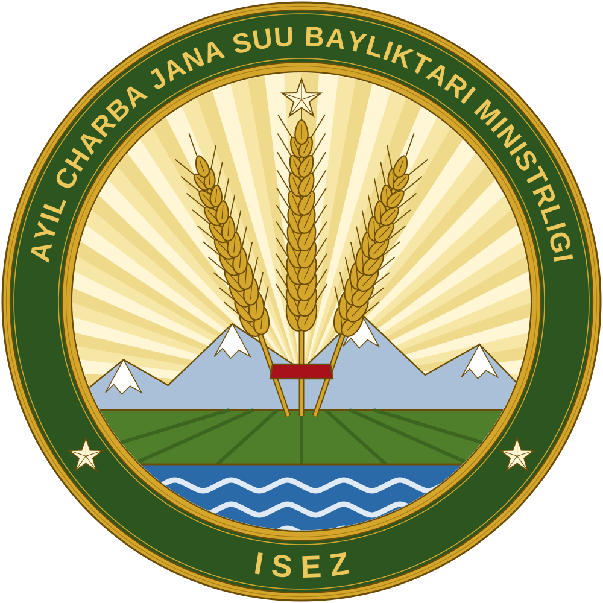

Menu
Useful links |
About the Ministry

The Ministry of Agriculture and Water Resources is one of the ten ministries of the Irad Special Economic Zone. The Minister is appointed by the Governor.
History
Under the territorial administration (1992-2006) agriculture was the responsibility of the territorial Department of Agriculture, headed by a Secretary. The Department carried out the land reform of 1994, when the land of the collective and state farms passed to household and family farms, and in 1995 set up the Talas Basin Agricultural Directorate and the Chu Valley Irrigation Inspectorate in place of the Soviet irrigation administrations. With American advisers it created the water users' associations, which buy water from the Directorate and the Inspectorate and maintain the smaller ditches (aryk).
Since 2007 it is the Ministry of Agriculture and Water Resources. The records of the territorial Department are kept in the State Archives (Fond 118). The e-mail address of the Ministry keeps the territorial zone: info@agriculture.id.gov.
Main tasks
- the seasonal water allocation plan for the Talas, Chu and Naryn canals; rotations in dry years; the dry-year plans of large water users;
- the Irrigation Modernization Programme (from 2018): canal lining, laser levelling, drip irrigation;
- crop production: the seed and fertilizer reserve, extension services, crop statistics, the market of grain and potatoes;
- livestock: veterinary control through the State Veterinary Inspectorate, pedigree breeding, fodder reserves;
- state support to agricultural producers;
- the work of the ISEZ in the joint technical commission on the Naryn and in technical meetings on the Talas and the Chu.
Plant quarantine and pastures of the mountain pasture fund are the responsibility of the Ministry of Natural Resources.
Departments of the central office
| Department | Responsible for |
|---|
| Department of Crop Production | Sowing and harvest plans, seed and fertilizer reserves, crop statistics, plant protection advice, the market of potatoes, grain and beans. Head A. Osmonova; deputy head P. Gorbunov. | | Department of Water Resources and Irrigation | The seasonal water allocation plan, canal rotations, dry-year water plans of large users (Executive Directive 2022/14), work with the water users' associations and the Naryn and Talas basin commissions. | | Irrigation Modernization Programme Unit | Canal lining, laser levelling and drip irrigation contracts (Programme 2018-). | | Department of Livestock and Pedigree Breeding | Herd statistics, pedigree registers of cattle and sheep, the State Stud Farm of Talas, fodder reserves. | | Department of Economics, Subsidies and Statistics | State support to agricultural producers, prices, agricultural statistics together with the Territorial Statistics Office. | | Legal Department | Draft orders, comments on drafts, appeals of citizens. |
Subordinate bodies
| Body | Functions | Telephone |
|---|
Talas Basin Agricultural Directorate
Talas, Jibek Jolu Avenue 41 | Irrigation and extension in Talas District, Kara-Buura District and the farmland of the city of Talas; about 110,000 ha irrigated. Director A. Toroev. | +996-39-2-24-61-00 | State Veterinary Inspectorate (of the Directorate)
Talas, Jibek Jolu Avenue 41, 2nd floor; cash desk at Tokmok Street 3 | Veterinary permits (Forms 1-VET, 2-VET), vaccination rounds, slaughter points, movement of animals. | +996-39-2-24-61-40 | Chu Valley Irrigation Inspectorate
Nurzhan, Central Headworks road 2 | The lower Chu network: more than 80,000 ha, about 1,200 km of canals, 400 km of collector drains. Head S. Ten. | +996-39-3-41-70-00 | Lower Naryn Irrigation Section
Tash-Kömür, Naryn Street 9 | Canals of the Lower Naryn District (Dostuk, Pakhta-Abad) under the Naryn Water and Power Protocol. Head R. Khamidov. | +996-39-2-57-20-10 | Talas Veterinary Research Center
Talas | State veterinary laboratory (1962): brucellosis and tuberculosis tests, vaccine control, equine diseases. | +996-39-2-24-63-00 | Nurzhan Interdistrict Veterinary Laboratory
Nurzhan, Dastgoh District | Laboratory tests for the Chu District and Nurzhan; egg and milk tests. | +996-39-3-44-18-20 | Kara-Bulak Agricultural Experimental Station
Kara-Bulak, Talas District | Maize and fodder trials since 1956, seed multiplication of wheat and barley. | +996-39-2-55-31-10 | State Stud Farm of Talas
Talas District | Akyel and Novokirgiz breeding stock, annual auction. | +996-39-2-55-12-40 |
Leadership of the Ministry »
|
Water situation
| Toktogul reservoir | 16.6 km³ |
| filled | 87.3% |
| trend | drawing down |
| Irrigation season | closed |
| Autumn watering | to 18.11 |
Schedules by canal » Potato imports Draft order: comment period closed 30.10.2026, 61 comments received. The decision will be announced by the Department of Public Information. Draft and register »Farm calendar: November
› autumn watering by WUA schedule
› ploughing for spring crops
› vaccination round to 30.11
› potatoes into the cellar at 2-4 °C
› drip subsidy applications open Poll
Is the water schedule published early enough?
| yes | 18% | | no, a month earlier | 59% | | I don't use it | 23% |
Votes: 1 214. Voting closed.Reception of citizens Minister M. Nurmatov: first Wednesday of the month, 10:00-13:00, by registration, tel. +996-39-2-24-60-10. |